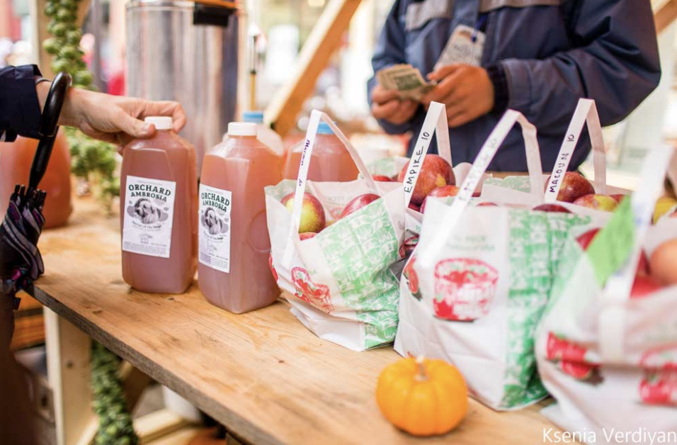

40th Annual Apple Harvest Festival
September 30-October 2
Located on the Ithaca Commons
Festival Hours
- Friday, September 30: 12pm - 6pm
- Saturday, October 1: 10am - 6pm
- Sunday, October 2: 10am - 6pm
- We are excited to welcome you back to one of Ithaca’s most celebrated events: the Apple Harvest Festival! Join us for three days of farm-fresh bites, local crafts, live music, and fall activities for all ages.
History of Festival
Since 1982, the Ithaca Apple Harvest Festival hosts apples, baked goods, family entertainment, games, prizes, live entertainment and more. Over 100 talented artists, crafters, bakers, and makers come together for the Apple Harvest Craft Fair! Find creative, unique works from clothing to woodworking, ceramics to paintings, fudge to essential oils and beyond throughout the festival. The festival is held in the Ithaca Commons, a few streets that are full of restaurants and shops.